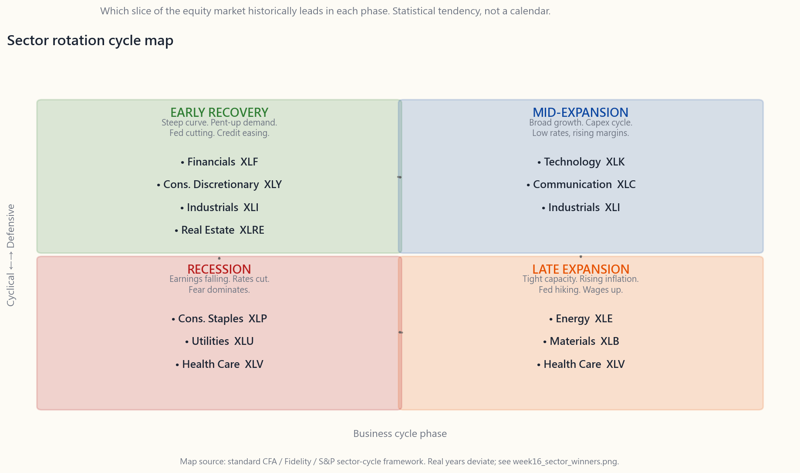
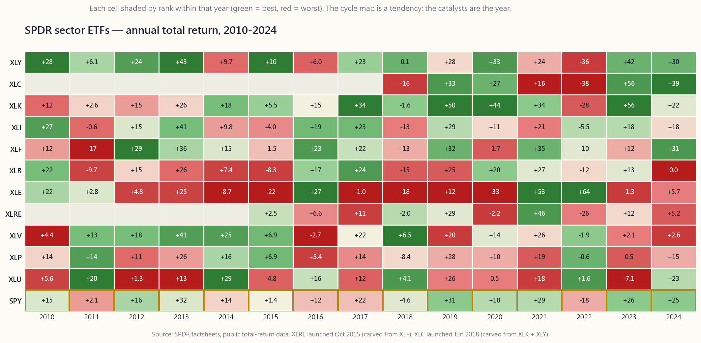

Week 16: Sector Rotation — Which Slice of the Market Wins in Each Phase
1. Why This Is Important
The S&P 500 is not one thing. It is eleven things stitched together under a single ticker. In any given calendar year, the spread between the best-performing GICS sector and the worst can run 60-90 percentage points. In 2022, energy returned +64% while communication services returned -38% — a 100-point spread inside a single index. The "market" returned -18%. None of the eleven sectors actually did that.
If you understand which slice of the market wins in each phase of the business cycle, you have the rough outline of one of the durable alpha sources: sector rotation. Capital cycles between sectors on predictable macro and rate shifts. Ride the rotation and the cycle pays you. Fight it and you spend a decade underperforming a passive S&P investor who never opened the app.
Four reasons this matters even if you decide not to rotate.
academic evidence is ugly — sector tilts have empirical backing. Defensive sectors outperform in late-cycle and recession regimes; cyclicals outperform in early- and mid-cycle. The pattern is messy, the timing is hard, but the structural story has played out repeatedly since the data started in the 1960s.
and staples lead for three months while financials and discretionary lag, the market is voting on a slowdown — and doing it before any economist has confirmed one. Reading sector leadership is reading the macro bid in real time.
stocks fall 30% and energy is up 50%, the issue is not "tech is broken." It is that the discount rate for long-duration cash flows just doubled. Knowing the cycle prevents you from selling the wrong sector at the wrong time.
default — and the data on retail sector rotators is consistently worse than buy-and-hold the index. Knowing the framework is necessary to even attempt it, and even then most attempts fail. Decide honestly whether you are running rotation as a hobby or as a real edge.
This lesson covers the eleven GICS sectors and their SPDR ETFs, the canonical cycle map, why the map breaks (2020 flipped the script in four weeks), the momentum-vs-mean-reversion question at the sector level, and the brutal honest reality of retail rotation P&L.
2. What You Need to Know
2.1 The Eleven GICS Sectors and Their SPDR ETFs
The Global Industry Classification Standard (GICS), maintained jointly by S&P and MSCI, divides every listed company into one of eleven sectors. State Street's SPDR family runs an ETF for each, all with expense ratios under 0.10% and combined assets above $200B. They are the canonical retail vehicles for sector exposure.
| Sector | ETF | What's in it |
|---|---|---|
| Technology | XLK | Microsoft, Apple, NVIDIA, Broadcom, semiconductors, software |
| Financials | XLF | JPMorgan, Berkshire, banks, insurers, exchanges |
| Health Care | XLV | UnitedHealth, Eli Lilly, J&J, drugmakers, devices, hospitals |
| Consumer Discretionary | XLY | Amazon, Tesla, Home Depot, autos, hotels, restaurants, retail |
| Communication Services | XLC | Meta, Alphabet, Netflix, telecoms, media (split out from tech in 2018) |
| Industrials | XLI | GE, Caterpillar, Boeing, defense, rails, airlines, machinery |
| Consumer Staples | XLP | P&G, Costco, Walmart, Coke, Pepsi, household goods, tobacco |
| Energy | XLE | ExxonMobil, Chevron, oil and gas E&P, services, refiners |
| Utilities | XLU | NextEra, Duke, electric and water utilities, regulated monopolies |
| Real Estate | XLRE | American Tower, Prologis, REITs (split out from financials in 2016) |
| Materials | XLB | Linde, Sherwin-Williams, chemicals, metals, paper, packaging |
Two notes on the structure.
First, XLRE and XLC are recent. Real estate was carved out of financials in September 2016; communication services was carved out of technology and discretionary in September 2018. Most of the long historical data we have is therefore on nine sectors, not eleven. For the 2010-2024 backtests we run later, treat XLRE and XLC as "data starts mid-decade" and don't over-fit to their short history.
Second, GICS classifications are not always intuitive. Amazon is discretionary, not tech. Tesla is discretionary, not industrials. Visa and Mastercard are tech, not financials. Walmart is staples, Costco is staples, but Target is discretionary. The mental model "tech = software + chips" is tighter than the actual XLK basket; the mental model "financials = banks + insurers + exchanges" is roughly right after XLRE was carved out.
2.2 The Canonical Cycle Map
The folk wisdom — repeated in every CFA textbook and most strategist notes — is that sectors lead and lag in a predictable order through the four phases of the business cycle. The map looks like this:
![Schematic four-quadrant cycle map. Horizontal axis is the business cycle phase from early recovery on the left, through mid-expansion, late expansion, to recession on the right. Vertical axis distinguishes cyclical sectors (top) from defensive sectors (bottom). The four quadrants are filled with the sectors that historically lead in each phase: early = financials and consumer discretionary and industrials; mid = technology and communication services and industrials; late = energy and materials and health care; recession = consumer staples and utilities and health care. A thin grey arrow loops through the four quadrants in clockwise order to indicate the rotation.](image/week16_cycle_map.png)
The story behind the map.
- Early recovery — rates have been cut hard, the yield curve is
- Mid-expansion — growth is broad, capex turns on, business
- Late expansion — capacity is tight, inflation lifts, the Fed
- Recession — earnings are falling, rates are being cut, fear is
The map is real. It is also not nearly as clean as the textbook draws it, which is the next subsection.
2.3 The Yearly Heatmap — The Map Versus Reality
The chart below is the actual 2010-2024 record: each year's annual total return for each SPDR sector ETF, coloured by decile within that year. A green cell means the sector was in that year's top decile; a red cell means it was in the bottom decile.
![Heatmap of annual total returns for the eleven SPDR sector ETFs from 2010 through 2024. Rows are the eleven sectors (XLY, XLP, XLE, XLF, XLV, XLI, XLB, XLRE, XLK, XLC, XLU); columns are years. Each cell is shaded by where that sector ranked within that year's eleven returns: the top-ranked sector is the deepest green, the bottom-ranked is the deepest red, with neutral colours in between. Numbers inside each cell show the actual annual return percent. The S&P 500 row at the bottom (SPY) sits in the middle of every year by construction. Visible features: tech (XLK) leads most of 2013-2020 and 2023-2024; energy (XLE) is the worst sector for years 2014-2020 then explodes to the top in 2021-2022; 2022 is the year nearly every cell is red except XLE, XLU, XLP; 2023 reverses sharply with tech and communication services on top.](image/week16_sector_winners.png)
Read the chart with three questions.
First, does the canonical map hold? Pick any clean cycle phase on the chart and check. 2010-2011 was textbook early recovery, and financials underperformed badly (XLF -17% in 2011) because the European debt crisis hit US banks hard. That is not in the cycle map. 2018-2019 was textbook late-cycle, and energy was the worst-performing sector both years. Also not in the map.
Second, what years does the map fit? 2017 — mid-expansion — tech leads, materials and industrials work, staples lag. Clean. 2022 — inflation shock that rhymes with late-cycle — energy crushes everything, materials and staples hold up, tech and discretionary collapse. Also clean.
Third, what years break it? 2020 broke it in four weeks. The COVID recession started in February 2020 with utilities and staples leading, exactly as the map says. By April, with the Fed at zero and Congress having passed $5T of fiscal stimulus, technology had flipped to the year's leadership and energy was finishing -33%. The recession was officially over in April. The "recession sector" playbook had three months of validity in a downturn that re-rated in weeks rather than years.
The honest read: **the cycle map is a statistical tendency, not a calendar.** It works in the average year of the average cycle. Individual years are dominated by individual catalysts — the 2008 financial-system crisis, the 2014-2016 oil collapse, the 2020 COVID shock, the 2022 rate shock, the 2023 AI mania — and these catalysts override the cycle whenever they show up.
2.4 Momentum vs Mean Reversion at the Sector Level
This is the momentum-vs-mean-reversion question, scaled down from the whole market to the eleven slices. Two playbooks both have empirical support:
- Momentum. Buy the sector that has been working. Hold for 3-12
- Mean reversion. Buy the sector everyone hated last year, sell
Both are true. The hard part — exactly as in #8 — is recognising which regime is active. Some markets reward momentum; others reward mean reversion. Most of the academic evidence points to **3-12 month momentum and 3-5 year mean reversion** as the rough horizons that have separated. Inside that band, the strategies cancel.
Practically, the retail investor who buys "the sector that just had a great year" is usually expressing mean-reversion-as-mistake — they are buying at the top of a 12-month momentum run that is about to reverse. The investor who buys "the sector that just had its worst year in a decade" is more often right than wrong, if they can hold through the additional drawdown that frequently comes before the revival. Either playbook needs the discipline to size for survival and a clear stop on what proves the thesis wrong.
2.5 The Brutal P&L of Retail Rotation
Here is the part the textbooks leave out. The interactive lab below this lesson lets you pick up to four sectors and plot their 2010-2024 cumulative return against the S&P 500 with a single toggle. Run a few combinations:
- All-tech rotation (XLK only). Beats SPY handily over the full
- Buy the previous year's winner, every year. Trail the
- Buy the previous year's loser, every year. Roughly matches
- Equal-weight all eleven. Slightly lags SPY (which is
The decade's retail rotators have lost not because rotation is wrong, but because the version they ran was: chase last quarter's winner, sell on the first 10% drawdown, repeat. That is not rotation. That is performance-chasing in fancy clothes.
The professional version of rotation — overlay on top of a passive core, tilt by a few percentage points based on the cycle and positioning data, never bet the portfolio on a single sector — is where the alpha lives. The retail version, run as a substitute for the passive core, almost always underperforms.
The honest framing: **most retail readers are better off with the S&P 500 and a 10-15% sector tilt at most.** That tilt can give you the win-some flavour of the cycle without the structural risk of betting the portfolio on next year's leadership map.
2.6 The Practical Toolkit
Three ways retail investors actually use sector ETFs:
the portfolio relative to S&P weights. If the tilt is wrong by 5 percentage points of return, the portfolio impact is 25-50bps — survivable. If the tilt is right, you get a modest premium over the cycle. This is the only rotation discipline that survives most retail temperaments.
PMI drop below 50, jobless claims trend up — these are late-cycle signals. Some investors run the rotation only at these triggers: tilt to staples, utilities, health care, and reduce equity beta. Hold the defensive tilt until the curve un-inverts and the Fed cuts. This is Horace's preferred shape: asymmetric risk-on / risk-off rather than continuous rotation.
sector you understand, you can own the seniors (the cap-weighted ETF), the juniors (mid-cap names), and the explorers (small-cap options or single names). When the sector cycles into favour, the tranches re-rate in order, and the explorers carry the biggest payoff. Energy 2020-2022 was the textbook example — XLE up 1.6x, mid-cap E&Ps up 3-5x, distressed shale survivors up 10-30x. This is the playbook for sector conviction, not a recipe for blanket rotation.
The interactive lab below lets you mix the sectors and see how each combination behaves against SPY. Run a few. The discipline the chart will teach you, faster than any textbook, is that beating SPY by tilt is harder than the cycle map makes it look.
3. Common Misconceptions
In any individual year, sector returns are dominated by the year's specific catalyst (oil shock, banking crisis, COVID, AI mania). The cycle is one variable; it is rarely the dominant one.
and was the worst sector in 2022, the worst sector in 2008, and one of the worst over 2000-2002. The "always" is a recency bias from a decade of falling rates.
2010-2019 with materially lower volatility than the S&P. "Defensive" means lower beta, not zero growth. The compounding is real, just smoother.
2014-2020 and the best sector in 2021 and 2022. ESG mandates that dumped it on the way down had to buy it back at higher prices on the way up. Buying what passive flows have abandoned was the trade.
3-6 months. By the time CNBC is running "the recession is here" on the chyron, defensives have already led for two quarters. Rotation works only if you front-run the consensus, which is most retail traders' weakness, not strength.
to 2020 — it kept being the worst sector for six straight years. Mean reversion is a long-horizon tendency that can take a decade to play out, and "right but early" is operationally indistinguishable from "wrong" — the market can stay irrational longer than you can stay solvent.
NVIDIA. XLC is 40% Meta + Alphabet. XLY is 25% Amazon + Tesla. The "sector" is often a leveraged bet on three names. The S&P 500 is more diversified than most of its sector slices.
Factors (value, momentum, quality, low-vol) cut across sectors. You can be long the value factor and own all eleven sectors. Sector rotation is one specific tilt; factor investing is a different framework that often produces opposite sector bets from the cycle map.
4. Q&A Section
Q: What's the simplest sector tilt I can run on top of an S&P 500 core? A: Hold 80-90% in SPY (or VOO), and use the remaining 10-20% to overweight one or two sectors by conviction. If you think we're late-cycle, that 10-20% goes to XLV and XLP. If early-cycle, XLF and XLY. Rebalance annually. The portfolio risk impact stays modest, and you participate in the rotation at the margin.
Q: How do I tell which phase of the cycle we're in? A: Yield curve slope, PMI level, jobless claims trend, and Fed policy direction together give you a 70%+ confident read. We cover the indicators in detail in Week 10. Roughly: yield curve inverted + PMI below 50 + claims rising + Fed cutting = late-cycle into recession. Curve steep + PMI rising + claims falling + Fed cutting hard = early recovery. Most signals never give you the textbook configuration; you go with the majority of indicators.
Q: Can I just buy whatever sector worked last year? A: That is the naive momentum trade and over 2010-2024 it has slightly underperformed the S&P. The reason is selection bias — the previous year's winner is often the one most likely to mean-revert in the next year. The 12-month momentum signal that academics document works at 1-3 month rebalancing horizons, not annual.
Q: What about leveraged sector ETFs? A: Avoid. Daily-rebalanced 2x and 3x ETFs decay over time due to volatility drag, often losing money even when the underlying sector is roughly flat. They are intraday speculation tools, not investments.
Q: Is energy a buy in 2026? A: This course doesn't pick names. The framework: energy has underperformed since the 2022 peak, oil is range-bound, ESG selling has eased, and the S&P 500 weight is below 4%. By the principle of buying what passive flows have abandoned, the structural setup is more attractive than the ten years from 2010 to 2020. Whether that translates to next year's return depends on demand, geopolitics, and the dollar.
Q: How does sector rotation interact with the four-tranche framework? A: Once you have a sector conviction, the tranches tell you how to express it. ETF for the senior exposure. Mid-cap names you've researched for the junior leg. Long-dated calls on small-cap names or pre-revenue specs for the explorer leg, sized so the loss is survivable. The cycle gives you the sector; the tranches give you the expression.
**Q: What's wrong with rotating into staples and utilities for the recession?** A: Two things. One, by the time the recession is the consensus narrative, those sectors have already had their move; you're late. Two, in a deflationary recession (1929-1932, 2008-2009) even staples and utilities sell off; they only outperform on a relative basis. The defensives playbook works best in shallow recessions with quick Fed responses (2001, 2020). It can hurt in long bear markets where everything goes down together.
Q: Why did the 2020 cycle break the map? A: COVID was a four-week recession from a markets perspective. The Fed cut to zero in 9 days, Congress passed $5T of stimulus in 6 weeks, and the discount rate on long-duration cash flows collapsed. Tech (long-duration) re-rated immediately; energy (short-duration commodity demand) collapsed because nobody was driving. The map assumes a multi-quarter transition. 2020 didn't give one. Future shocks may also not give one.
Q: How do US sector classifications differ from international? A: GICS is global. The same eleven sectors exist in Europe and Asia. Sector weights differ — the US is roughly 30% tech, Europe is 5%; Europe is heavier in financials and industrials. But the framework transports. We restrict to US-only across this course; ex-US sector tilts are out of scope here.
**Q: Should I use sector ETFs in a tax-advantaged account or taxable?** A: Either works. Sector ETFs are tax-efficient — most are organised as RICs with low turnover. The tradeable advantage is that rotating between sector ETFs in a taxable account triggers capital-gains events; in a 401(k) or IRA, it doesn't. If you plan to actually rotate, do it in the tax-deferred account.
**Q: What's the single highest-conviction sector tilt for someone who follows the structural-flow argument?** A: Horace's bias is toward what passive flows have abandoned. In April 2026 that is a coin-flip among energy (post-2022 peak, ESG-divested), small-cap value (a decade out of favour), and the financial sector (post-2023 regional bank scare). None of these are textbook recommendations; they are positions taken on top of a broad-index core, sized so being wrong for two years doesn't threaten the rest of the portfolio. The core is still the S&P 500.
第十六週：板塊輪動 — 每個周期階段誰主沉浮
1. 為何此題重要
標普500指數並非鐵板一塊，而是由十一個板塊拼接而成，共用同一個代碼。任何一個日曆年度裡，表現最佳與最差的GICS板塊之間，差距可達60至90個百分點。2022年，能源板塊回報+64%，通訊服務回報-38%，同一個指數之內，差距達100個百分點。「大市」全年回報-18%，但十一個板塊中，沒有一個真的做出這個數字。
若你能掌握哪個板塊在哪個經濟周期階段勝出，你便掌握了其中一個有跡可循的超額回報來源的大致輪廓：板塊輪動。資金在板塊之間循著可預見的宏觀與利率轉換而流動。順勢而為，周期便是你的利器；逆勢而行，你便要花上整整十年，落後於一個從不開應用程式的被動標普500投資者。
即使你決定不做輪動，以下四個理由說明此題仍與你息息相關。
本課涵蓋十一個GICS板塊及其SPDR交易所買賣基金、標準周期圖示、周期圖示為何失靈（2020年在四個星期內顛覆了劇本）、板塊層面的動量與均值回歸之辯，以及散戶輪動損益的殘酷真相。
2. 你需要掌握的知識
2.1 十一個GICS板塊及其SPDR交易所買賣基金
全球行業分類標準（GICS）由標普與MSCI聯合維護，將每一家上市公司劃入十一個板塊之一。道富的SPDR系列為每個板塊設有一隻交易所買賣基金，開支比率均低於0.10%，合計資產規模逾2,000億美元。它們是散戶進行板塊配置的標準工具。
| 板塊 | 交易所買賣基金 | 主要成分 |
|---|---|---|
| 科技 | XLK | 微軟、蘋果、NVIDIA、博通、半導體、軟件 |
| 金融 | XLF | 摩根大通、巴郡、銀行、保險商、交易所 |
| 醫療保健 | XLV | UnitedHealth、禮來、強生、製藥商、醫療器械、醫院 |
| 非必需消費品 | XLY | 亞馬遜、特斯拉、家得寶、汽車、酒店、餐飲、零售 |
| 通訊服務 | XLC | Meta、Alphabet、Netflix、電訊、媒體（2018年從科技板塊分拆） |
| 工業 | XLI | GE、卡特彼勒、波音、國防、鐵路、航空、機械 |
| 必需消費品 | XLP | 寶潔、Costco、沃爾瑪、可口可樂、百事可樂、家庭用品、煙草 |
| 能源 | XLE | 埃克森美孚、雪佛龍、油氣勘探開採、服務商、煉油商 |
| 公用事業 | XLU | NextEra、杜克能源、電力及水務公用事業、受監管壟斷企業 |
| 房地產 | XLRE | 美國鐵塔、Prologis、房地產信託基金（2016年從金融板塊分拆） |
| 原材料 | XLB | 林德、宣偉、化工、金屬、紙業、包裝 |
關於板塊結構，有兩點值得留意。
首先，XLRE與XLC均屬新近設立。 房地產於2016年9月從金融板塊分拆；通訊服務於2018年9月從科技與非必需消費品板塊分拆。因此，我們所掌握的大部分長期歷史數據均只涵蓋九個板塊，而非十一個。在本課稍後進行的2010至2024年回測中，XLRE與XLC應視為「數據由本世紀中段方才開始」，切忌過度依附其有限的歷史規律。
其次，GICS的分類並非總是符合直覺。 亞馬遜屬非必需消費品，而非科技；特斯拉屬非必需消費品，而非工業；Visa與Mastercard屬科技，而非金融；沃爾瑪與Costco同屬必需消費品，但Target卻屬非必需消費品。「科技 = 軟件 + 芯片」的概念比實際XLK籃子更為精確；「金融 = 銀行 + 保險商 + 交易所」則在XLRE分拆後大致吻合。
2.2 標準周期圖示
民間智慧——在每一本特許財務分析師教材及大多數策略師報告中反覆出現——是板塊依照可預測的順序，在經濟周期四個階段中輪番領漲和落後。圖示如下：

圖示背後的邏輯。
- 早期復甦 — 利率已大幅下調，收益率曲線陡峭，信貸鬆動，消費者積壓需求開始釋放。金融板塊受惠於陡斜的收益率曲線及貸款損失下降。非必需消費品板塊隨薪資上升與信心反彈而受益。工業板塊受益於庫存補充。
- 中期擴張 — 增長全面，資本開支啟動，企業軟件與基礎設施投資加速。科技與通訊服務板塊領漲，因為在利率仍低的環境下，長存續期現金流估值重估向上。工業板塊持續發力。
- 後期擴張 — 產能緊張，通脹升溫，美聯儲加息。能源與原材料板塊領漲，因為它們本身便是通脹的輸入端。醫療保健開始發力，因投資者開始追求優質及穩定需求的資產。
- 衰退 — 盈利下滑，利率被下調，恐懼主導市場情緒。必需消費品、公用事業與醫療保健領漲——這些是人們需要而非想要的產品。長期國債、黃金與現金是跨資產的贏家。
2.3 年度熱力圖——圖示與現實的落差
下圖是2010至2024年的實際記錄：每隻SPDR板塊交易所買賣基金每年的年度總回報，按當年十分位排名著色。綠色格代表該板塊位於當年的頂部十分位；紅色格代表位於底部十分位。

閱讀此圖時，請帶著三個問題。
第一，標準圖示是否成立？ 在圖中選取任何一個清晰的周期階段加以驗證。2010至2011年是教科書式的早期復甦，而金融板塊卻嚴重跑輸（XLF 2011年下跌17%），原因是歐洲債務危機重創美國銀行股。這一點不在周期圖示的預測之內。2018至2019年是教科書式的後期擴張，而能源板塊在兩年間均是表現最差的板塊。圖示同樣未能預見。
第二，圖示在哪些年份奏效？ 2017年——中期擴張——科技領漲，原材料與工業表現良好，必需消費品落後。清晰吻合。2022年——與後期擴張相仿的通脹衝擊——能源大幅跑贏一切，原材料與必需消費品守穩，科技與非必需消費品崩潰。同樣吻合。
第三，哪些年份使圖示失效？ 2020年在四個星期內打破了一切。新冠疫情引發的衰退於2020年2月展開，公用事業與必需消費品如圖示所示率先領漲。但到了4月，美聯儲已將利率降至零，國會通過了5萬億美元的財政刺激，科技板塊已反轉為年度領漲板塊，能源板塊全年以-33%收場。衰退在官方口徑上於4月結束。「衰退板塊」的操作手冊，在一場以週計而非以年計重估的衰退中，只有三個月的有效期。
客觀的解讀：周期圖示是一種統計規律，而非行事曆。 它在平均周期的平均年份中奏效。個別年份受個別催化劑主導——2008年的金融系統危機、2014至2016年的油價崩潰、2020年的新冠衝擊、2022年的利率衝擊、2023年的人工智能狂熱——每當這些催化劑出現，便會凌駕于周期之上。
2.4 板塊層面的動量與均值回歸
這是動量與均值回歸之辯，從整體市場縮窄至十一個板塊。兩種操作方式均有實證支持：
- 動量。 買入正在發力的板塊。持有3至12個月。待其動力減退時賣出。趨勢跟蹤文獻顯示，板塊層面的動量策略在過去數十年間產生了正的風險調整回報——與資產類別層面的情況相同。
- 均值回歸。 買入去年人人嫌棄的板塊，賣出人人追捧的板塊。在超過一年的時間跨度上，板塊排名趨於回歸均值。能源在2020年（最差板塊，隨後於2021年成為最佳）；科技在2022年（最差，隨後於2023年成為最佳）。領漲板塊的輪換周期如此。
實際操作上，買入「去年表現出色的板塊」的散戶，往往是在表達均值回歸式的錯誤判斷——他們在一段12個月動量即將反轉的頂部買入。買入「過去十年中最慘烈的板塊」的投資者，在更多情況下是對的，前提是他們能熬過在復甦前常見的額外回撤。無論哪種操作方式，都需要以能夠生存的倉位管理為紀律，並對何種情況證明論點有誤設定清晰的止蝕點。
2.5 散戶輪動的殘酷損益
以下是教材所略去的部分。本課下方的互動實驗室讓你選取最多四個板塊，並透過單一切換鍵，將其2010至2024年的累計回報與標普500對比。試驗幾個組合：
- 全押科技輪動（只持XLK）。 在整個時間窗口內，大幅跑贏標準普爾500指數ETF（SPY）。最終財富約為指數的2.0倍。看似天才之舉。但逐年細看，2022年虧損-28%，而指數同期跌-18%，而且大多數受注意力驅動的散戶輪動交易，都發生在+50%大漲之後，而非之前。
- 每年買入上一年的最佳板塊。 在2010至2024年間，每年落後標普500約4至6個百分點。教科書式的動量交易，若執行方式粗糙，反而輸給被動投資。
- 每年買入上一年的最差板塊。 大致與標普500持平，但波動性高得多。教科書式的均值回歸交易，若執行方式粗糙，只能打個平手。
- 十一個板塊等權重配置。 在整個時間窗口內，略遜於以市值加權的標普500指數ETF。在大型股未大幅拋離的年份奏效（2014至2016年、2022年）；在大型股大幅跑贏的年份落後（2020至2021年、2023至2024年）。
輪動的專業版本——疊加在被動核心之上，根據周期與倉位數據進行小幅傾斜，從不把整個投資組合押注在單一板塊——才是超額回報的所在。散戶版本，若用以取代被動核心，幾乎必然跑輸。
坦誠的框架：大多數散戶讀者最好持有標普500，加上最多10至15%的板塊傾斜。 這種傾斜可讓你在周期中分享板塊輪動的收益，同時避免把整個投資組合押注在來年領漲板塊圖示的系統性風險。
2.6 實用工具組合
散戶投資者實際運用板塊交易所買賣基金的三種方式：
本課下方的互動實驗室讓你混搭板塊，觀察每種組合相對於標普500指數ETF的表現。多試幾個組合。圖表所能教你的紀律，比任何教材都快：靠傾斜跑贏標普500，比周期圖示所呈現的要難得多。
3. 常見誤解
4. 問答環節
問：在標普500核心倉位之上，我能執行的最簡單的板塊傾斜是什麼？ 答：將80至90%持有於標普500指數ETF（SPY或VOO），餘下10至20%用於根據信念超配一至兩個板塊。若認為當前處於後期周期，這10至20%配置至XLV與XLP。若處於早期周期，則配置至XLF與XLY。每年再平衡一次。投資組合風險影響維持在可控範圍，同時你在邊際上參與了輪動。
問：如何判斷當前處於周期的哪個階段？ 答：收益率曲線斜率、採購經理指數水平、初請失業救濟人數趨勢，以及美聯儲政策方向，合併起來可提供超過70%置信度的判斷。我們在第10週詳細介紹這些指標。粗略而言：收益率曲線倒掛+採購經理指數低於50+初請人數上升+美聯儲減息=後期周期進入衰退。收益率曲線陡斜+採購經理指數上升+初請人數下降+美聯儲大幅減息=早期復甦。大多數信號從不呈現教科書式的完美配置；以指標多數派的指向為準。
問：我可以直接買入去年表現最佳的板塊嗎？ 答：那是粗糙的動量交易，在2010至2024年間，其表現略遜於標普500。原因在於選擇偏差——上一年的贏家往往最可能在下一年均值回歸。學術界所記錄的12個月動量信號，在1至3個月再平衡周期下有效，而非年度周期。
問：槓桿板塊交易所買賣基金如何？ 答：敬而遠之。每日再平衡的2倍和3倍交易所買賣基金，因波動性拖累而隨時間消耗，即使相關板塊大致持平，往往也會虧損。它們是日內投機工具，而非投資工具。
問：2026年能源板塊是買入時機嗎？ 答：本課程不作個股或板塊推薦。框架如下：能源板塊自2022年高峰以來表現遜色，油價區間震盪，ESG拋售壓力已減退，且在標普500中的權重低於4%。根據「買入被被動資金流棄守的板塊」原則，其結構性配置吸引力高於2010至2020年的十年。能否轉化為明年的回報，取決於需求、地緣政治及匯率走向。
問：板塊輪動如何與四層次框架相互配合？ 答：一旦你對某個板塊有信念，四層次框架告訴你如何表達。交易所買賣基金用於資深層配置。你已深入研究的中型股標的用於中間層。小型股標的的長期期權或收入前期股票用於探索層，倉位規模以虧損可承受為限。周期為你指明板塊，四層次框架為你提供表達方式。
問：輪動至必需消費品與公用事業以應對衰退，有什麼問題？ 答：兩點。其一，等到衰退成為市場共識，這些板塊的升幅已大半實現；你已慢了一步。其二，在通縮式衰退中（1929至1932年、2008至2009年），即使必需消費品與公用事業也會下跌；它們只是在相對層面跑贏。防禦性板塊操作手冊在衰退短暫且美聯儲反應迅速的情況下效果最佳（2001年、2020年）。在一切齊齊下跌的漫長熊市中，則可能帶來虧損。
問：為何2020年的周期打破了圖示？ 答：新冠疫情從市場角度而言是一場為期四週的衰退。美聯儲在9天內減息至零，國會在6週內通過了5萬億美元的刺激方案，長存續期現金流的折現率隨即崩落。科技板塊（長存續期）立即完成重估；能源板塊（商品短期需求）崩潰，因為沒有人在開車。周期圖示假設過渡期為數個季度。2020年沒有給出這個過渡期。未來的衝擊可能同樣不會。
問：美國板塊分類與國際市場有何不同？ 答：GICS是全球性標準。同樣的十一個板塊存在於歐洲和亞洲市場。板塊權重有所不同——美國科技板塊約佔30%，歐洲約佔5%；歐洲金融與工業板塊的比重更高。但這套框架可以移植。本課程僅限於美國市場；海外板塊傾斜不在討論範圍之內。
問：板塊交易所買賣基金應在稅務優惠帳戶還是應稅帳戶中使用？ 答：兩者均可。板塊交易所買賣基金的稅務效率高——大多數以受監管投資公司架構組成，換手率低。可操作的優勢在於：在應稅帳戶中輪換板塊交易所買賣基金會觸發資本增值事件；在401(k)或個人退休帳戶中則不會。若確實打算主動輪動，在稅務遞延帳戶中進行較為合適。
問：對於遵循結構性資金流論點的投資者，單一最高信念的板塊傾斜是什麼？ 答：陳馬的偏好是買入被被動資金流棄守的板塊。截至2026年4月，這是能源（自2022年高峰後遭拋售，ESG資金撤離）、小型股價值股（沉寂逾十年）及金融板塊（2023年地區銀行恐慌後）之間的難以抉擇。以上均非教科書式推薦；它們是建立在廣義指數核心倉位之上的持倉，規模以連續兩年判斷失誤也不會危及投資組合其餘部分為限。核心倉位始終是標普500。
第十六週：類股輪動 — 每個景氣階段，哪個市場切片勝出？
1. 為什麼這很重要
標普500指數並非鐵板一塊，而是由十一個板塊拼接在同一個代碼之下。在任何一個日曆年度，表現最佳的GICS類股與表現最差的類股之間，報酬率差距可達60至90個百分點。2022年，能源類股上漲64%，而通訊服務類股下跌38%，兩者相差整整100個百分點，卻同屬一個指數。那一年「大盤」報酬率為-18%，但十一個類股中，實際上沒有任何一個真的繳出-18%的成績單。
如果你能理解景氣循環的每個階段各有哪個市場切片勝出，你便掌握了一種持久超額報酬來源的粗略輪廓：類股輪動。資金在景氣循環與利率變動的驅動下，在各類股之間流轉，規律可循。順勢而行，循環就會犒賞你；逆勢而為，你可能耗費整整十年，連被動持有標普500、從不開帳戶的投資人都跑不贏。
即便你決定不執行輪動，以下四個理由仍值得你了解這套邏輯。
本課程涵蓋十一個GICS類股及其SPDR指數股票型基金、經典景氣循環圖、循環圖失靈的原因（2020年短短四週就翻轉了劇本）、類股層級的動能與均值回歸之爭，以及散戶輪動損益的殘酷真相。
2. 你需要知道的事
2.1 十一個GICS類股及其SPDR指數股票型基金
全球行業分類標準（GICS）由標普與MSCI共同維護，將每一家上市公司劃分至十一個類股之一。State Street的SPDR系列為每個類股設有一檔指數股票型基金，費用率均低於0.10%，合計管理資產逾2,000億美元，是散戶進行類股配置的標準工具。
| 類股 | 指數股票型基金 | 主要成分 |
|---|---|---|
| 科技 | XLK | 微軟、蘋果、輝達、博通、半導體、軟體 |
| 金融 | XLF | 摩根大通、波克夏、銀行、保險、交易所 |
| 醫療保健 | XLV | 聯合健康、禮來、嬌生、製藥、醫療器材、醫院 |
| 非必需消費品 | XLY | 亞馬遜、特斯拉、家得寶、汽車、飯店、餐飲、零售 |
| 通訊服務 | XLC | Meta、Alphabet、Netflix、電信、媒體（2018年自科技類股獨立出來） |
| 工業 | XLI | 奇異、開拓重工、波音、國防、鐵路、航空、機械 |
| 民生必需品 | XLP | 寶僑、好市多、沃爾瑪、可口可樂、百事、家用品、菸草 |
| 能源 | XLE | 埃克森美孚、雪佛龍、油氣勘探開採、服務業、煉油廠 |
| 公用事業 | XLU | NextEra、杜克能源、電力與供水公用事業、受監管獨占事業 |
| 不動產 | XLRE | 美國鐵塔、Prologis、不動產投資信託（2016年自金融類股獨立出來） |
| 原物料 | XLB | 林德、宣偉、化工、金屬、紙業、包裝 |
關於這個架構，有兩點需要說明。
首先，XLRE與XLC是相對較新的類股。 不動產於2016年9月自金融類股獨立，通訊服務則於2018年9月自科技與非必需消費品獨立。因此，我們所擁有的大多數長期歷史數據是基於九個類股，而非十一個。在後續的2010至2024年回測中，請將XLRE與XLC視為「數據自十年中段才開始」，切勿過度擬合其有限的歷史。
其次，GICS分類有時不符直覺。 亞馬遜屬於非必需消費品，而非科技。特斯拉屬於非必需消費品，而非工業。Visa與Mastercard屬於科技，而非金融。沃爾瑪是民生必需品，好市多是民生必需品，但Target卻是非必需消費品。「科技＝軟體＋晶片」的心理模型比實際的XLK籃子更為精確；「金融＝銀行＋保險公司＋交易所」的心理模型，在XLRE獨立之後大致正確。
2.2 經典景氣循環圖
流傳已久的說法——在每本CFA教科書和多數策略師報告中反覆出現——是各類股在景氣循環的四個階段中，以可預測的順序領漲與落後。這張循環圖看起來是這樣的：
這張循環圖背後的邏輯如下：
- 景氣初期復甦 — 利率大幅調降，殖利率曲線陡峭，信用條件放鬆，消費者被壓抑的需求開始釋放。金融類股受益於陡峭的殖利率曲線與下降的壞帳損失。非必需消費品受益於薪資與信心的回升。工業類股受益於庫存回補。
- 景氣中期擴張 — 成長動能全面展開，資本支出啟動，企業軟體與基礎設施支出加速。科技與通訊服務在利率仍低的環境下，長存續期間現金流重新評價，帶動領漲。工業類股持續表現。
- 景氣晚期擴張 — 產能趨於緊張，通膨升溫，聯準會啟動升息。能源與原物料本身就是通膨的來源，因而領漲。投資人開始追求品質與穩定需求，醫療保健也逐漸發力。
- 景氣衰退 — 盈餘下滑，利率開始調降，恐懼情緒主導市場。民生必需品、公用事業與醫療保健領漲——這些是人們必需品，而非想要的商品。跨資產類別來看，長天期國庫券、黃金與現金是贏家。
2.3 年度熱力圖 — 循環圖對比現實
下方圖表是2010至2024年的實際紀錄：每一年各SPDR類股指數股票型基金的年度總報酬率，並依當年度的十分位排名以顏色標示。綠色格子表示該類股位於當年前十分位；紅色格子表示位於後十分位。
閱讀這張圖時，請帶著三個問題。
第一，經典循環圖成立嗎？ 挑選圖中任何一個清晰的景氣階段來驗證。2010至2011年是教科書式的景氣初期復甦，但金融類股表現落後（XLF於2011年下跌17%），因為歐洲債務危機重創了美國銀行股。這不在循環圖的預測之內。2018至2019年是教科書式的景氣晚期，能源卻是這兩年表現最差的類股，同樣不在循環圖的預測之內。
第二，哪些年份循環圖適用？ 2017年——景氣中期擴張——科技領漲，原物料與工業發力，民生必需品落後，劇本乾淨利落。2022年——通膨衝擊，與景氣晚期相似——能源大幅壓倒其他所有類股，原物料與民生必需品守住，科技與非必需消費品崩跌，同樣乾淨利落。
第三，哪些年份打破了循環圖？ 2020年在四週內就打破了它。2020年2月，COVID疫情引發的衰退開始，公用事業與民生必需品領漲，完全符合循環圖的預測。然而到了4月，聯準會將利率降至零，國會通過5兆美元財政刺激，科技類股隨即翻轉成為全年領漲，能源則以-33%作收。衰退期的官方認定在4月便宣告結束。「衰退型類股」操作手冊在這場僅歷時數週而非數年的景氣下行中，只有約三個月的有效期。
誠實的解讀是：景氣循環圖是一種統計上的傾向，而非日曆表。 它在平均景氣循環的平均年份奏效。個別年份往往由個別催化因素主導——2008年金融體系危機、2014至2016年油價崩跌、2020年COVID衝擊、2022年利率衝擊、2023年AI熱潮——每當這些催化因素出現，便凌駕於景氣循環之上。
2.4 類股層級的動能與均值回歸
這是動能與均值回歸之爭，從整體市場縮小到十一個切片的層次。兩種操作策略都有實證支持：
- 動能策略。 買進近期表現強勁的類股，持有3至12個月，表現減弱時賣出。趨勢跟隨文獻顯示，在類股層級，這種策略在數十年間呈現正向的風險調整後報酬——與資產類別層級的結果相同。
- 均值回歸策略。 買進上一年度人人看衰的類股，賣出人人追捧的類股。在超過一年的時間尺度上，類股排名傾向於回歸均值。2020年能源（最差類股，隔年躍升為最佳）、2022年科技（最差，隔年最佳）——皆是典型案例。
就實務而言，買進「剛剛大漲一年的類股」的散戶，通常是把均值回歸操作成了錯誤——他們在12個月動能即將反轉的頂部進場。而買進「剛剛創下十年最差年度的類股」的投資人，往往比較容易對，前提是他們撐得過復甦前往往先來的進一步回撤。無論採用哪種策略，都需要有紀律地控制部位大小以求生存，並對「什麼情況足以推翻論點」有清晰的停損定義。
2.5 散戶輪動的殘酷損益真相
這是教科書略去不提的部分。本課後方的互動實驗室讓你最多選取四個類股，透過單一切換鍵，將其2010至2024年的累積報酬率與標普500對照呈現。多試幾種組合：
- 純科技輪動（僅持有XLK）。 在整個時間窗口內明顯跑贏SPY。最終財富約為指數的2.0倍。看起來像是神操作——直到你逐年檢視，才發現2022年讓你虧損-28%，而指數只跌-18%，而且多數散戶注意力驅動的輪動交易，往往發生在大漲50%之後，而不是之前。
- 每年買進前一年度的最佳類股。 在2010至2024年的時間窗口內，每年落後標普500約4至6個百分點。教科書式的動能交易，若天真地執行，反而輸給被動投資。
- 每年買進前一年度的最差類股。 大致與標普500持平，但波動性高出許多。教科書式的均值回歸交易，若天真地執行，結果是打平。
- 十一個類股等權重配置。 在整個時間窗口內略遜於SPY（SPY為市值加權）。在大型股未大幅領跑的年份（2014至2016年、2022年）表現較好；在大型股一枝獨秀的年份（2020至2021年、2023至2024年）落後。
專業版的輪動——疊加在被動核心部位之上、依據景氣循環與籌碼數據進行幾個百分點的傾斜、絕不把整個投資組合押注於單一類股——才是超額報酬的所在。散戶版的輪動，若作為被動核心部位的替代方案來操作，幾乎都跑輸大盤。
誠實的表述是：多數散戶讀者持有標普500搭配最多10至15%的類股傾斜，才是更好的選擇。 這個傾斜能讓你在景氣循環中獲得一些超額報酬的風味，同時避免把整個投資組合押注在明年領漲圖上的結構性風險。
2.6 實用工具箱
散戶投資人實際運用類股指數股票型基金的三種方式：
本課後方的互動實驗室讓你混搭各類股，觀察每種組合相對於SPY的表現。多嘗試幾種。這張圖表能比任何教科書都更快教會你一件事：透過傾斜來跑贏SPY，比景氣循環圖看起來難得多。
3. 常見迷思
4. 問答章節
問：我可以在標普500核心部位之上，執行最簡單的類股傾斜是什麼？ 答：持有80至90%在SPY（或VOO），剩餘10至20%依據你的判斷超配一至兩個類股。如果你認為目前處於景氣晚期，這10至20%就配置在XLV和XLP。如果是景氣初期，就配置在XLF和XLY。每年再平衡一次。投資組合的風險影響維持在可控範圍，你也能在邊際上參與輪動的報酬。
問：我如何判斷目前處於景氣循環的哪個階段？ 答：殖利率曲線斜率、採購經理人指數水準、初次申請失業救濟人數趨勢，以及聯準會政策方向，合在一起能給你70%以上把握的判讀。我們在第10週詳細介紹這些指標。大致說來：殖利率曲線倒掛＋採購經理人指數低於50＋申請人數上升＋聯準會降息＝景氣晚期步入衰退。殖利率曲線陡峭＋採購經理人指數上升＋申請人數下降＋聯準會大力降息＝景氣初期復甦。多數情況下，訊號不會呈現教科書般的完整組合；以多數指標的方向為準即可。
問：我可以直接買前一年表現最佳的類股嗎？ 答：那是天真的動能交易，在2010至2024年間，其績效略遜於標普500。原因在於選擇性偏誤——前一年的贏家，往往是下一年最可能均值回歸的類股。學術文獻記錄的12個月動能訊號，在1至3個月的再平衡頻率下有效，而非按年操作。
問：槓桿型類股指數股票型基金怎麼樣？ 答：避開。每日再平衡的2倍和3倍指數股票型基金，會因波動性拖累而隨時間衰減，即便對應類股的報酬大致持平，也往往在虧損。這類產品是當沖投機工具，不是投資標的。
問：2026年的能源類股值得買進嗎？ 答：本課程不提供個別標的建議。從框架來看：能源自2022年高點後持續落後，油價在區間整理，ESG相關的拋售壓力已趨緩，標普500的能源權重低於4%。依據買進被被動資金流棄的原則，其結構性配置吸引力優於2010至2020年的那十年。至於明年的報酬，取決於需求、地緣政治以及匯率走向。
問：類股輪動如何與四層次框架相互配合？ 答：一旦你對某個類股有高度信心，四層次框架告訴你如何表達這個觀點。指數股票型基金作為主力部位。你研究過的中型股個股作為次要部位。小型股個股的長期期權或尚未獲利的投機標的作為探索部位，且部位大小以虧損可承受為前提。景氣循環告訴你選哪個類股；四層次框架告訴你如何表達。
問：輪動進民生必需品和公用事業以應對衰退，有什麼問題？ 答：有兩個問題。第一，等到衰退成為市場共識時，這些類股早已完成漲幅，你已經遲到了。第二，在通縮型衰退（1929至1932年、2008至2009年）中，連民生必需品和公用事業都會下跌；它們只是在相對表現上優於大盤。防禦型類股操作手冊在淺度衰退且聯準會反應迅速時最為有效（2001年、2020年），在所有資產一起下跌的漫長空頭市場中反而可能造成虧損。
問：為什麼2020年打破了景氣循環圖的預測？ 答：從市場的角度來看，COVID不過是一場持續四週的衰退。聯準會在9天內將利率降至零，國會在6週內通過5兆美元的刺激方案，長存續期間現金流的折現率瞬間崩跌。科技類股（長存續期間）立即重新評價；能源類股（短存續期間的原物料需求）因無人開車而崩盤。景氣循環圖假設的是多個季度的過渡期，但2020年的循環根本沒有給這段時間。未來的衝擊，同樣可能不給這段時間。
問：美國的類股分類與國際有何不同？ 答：GICS是全球通用的框架，同樣的十一個類股在歐洲和亞洲都存在。類股權重因地區而異——美國科技類股約占30%，歐洲約占5%；歐洲在金融與工業的比重更高。但這套框架是可移植的。本課程限定在美國市場範疇；美國以外的類股傾斜不在討論範圍之內。
問：我應該在稅務優惠帳戶還是一般課稅帳戶中使用類股指數股票型基金？ 答：兩者皆可。類股指數股票型基金具有稅務效率，多數以低周轉率的投資公司形式組織。可操作的差異在於：在一般課稅帳戶中的類股切換會觸發資本利得稅事件；在401(k)或IRA中則不會。如果你計劃實際執行輪動，最好在遞延課稅帳戶中操作。
問：對於遵循結構性資金流論點的投資人，最具高度信心的單一類股傾斜是哪個？ 答：陳馬偏向買進被被動資金流棄的類股。在2026年4月，這大致在三個選項之間難分高下：能源（2022年高點後持續落後，ESG拋售壓力已消退）、小型股價值股（十年未受青睞）以及金融類股（2023年地區性銀行危機後的恐慌）。這些都不是教科書式的建議，而是在廣泛指數核心部位之上建立的傾斜部位，且部位大小以連錯兩年也不損及其餘投資組合為前提。核心部位仍然是標普500。
第十六周：板块轮动——每个周期阶段，市场哪个板块领涨？
1. 为什么这个话题很重要
标普500指数并非铁板一块，而是由十一个板块拼接而成，共用一个代码。在任意一个自然年度，表现最好与最差的GICS板块之间，回报率差距可达60至90个百分点。2022年，能源板块全年回报+64%，而通信服务板块回报-38%——同一指数之内，差距高达100个百分点。"大盘"整体回报-18%，但十一个板块中，没有一个的实际表现是-18%。
如果你能理解商业周期的每个阶段哪个市场板块占优，你就掌握了一个具有持续有效性的超额收益来源的基本框架：板块轮动。资本随着宏观形势和利率变化在各板块之间流动，规律可循。顺势而为，周期就会给你回报；逆势操作，你可能花上十年，依然跑输一个从不打开App的被动标普500投资者。
即便你最终决定不做轮动，以下四个理由告诉你为什么这个话题仍然值得学习。
本课涵盖十一个GICS板块及其SPDR交易所交易基金、经典周期映射图、这个映射为何失效（2020年仅用四周就颠覆了整个剧本）、板块层面的动量与均值回归之争，以及散户轮动盈亏表现的残酷现实。
2. 核心知识点
2.1 十一个GICS板块及其SPDR交易所交易基金
全球行业分类标准（GICS）由标普和MSCI联合维护，将所有上市公司划分为十一个板块。道富集团旗下SPDR系列为每个板块提供一只交易所交易基金，费用率均低于0.10%，合计资产规模超过2000亿美元。这些产品是散户获取板块敞口的标准工具。
| 板块 | ETF代码 | 主要成分 |
|---|---|---|
| 信息技术 | XLK | 微软、苹果、英伟达、博通、半导体、软件 |
| 金融 | XLF | 摩根大通、伯克希尔、银行、保险公司、交易所 |
| 医疗保健 | XLV | 联合健康、礼来、强生、制药、医疗器械、医院 |
| 可选消费 | XLY | 亚马逊、特斯拉、家得宝、汽车、酒店、餐饮、零售 |
| 通信服务 | XLC | Meta、谷歌母公司、奈飞、电信、媒体（2018年从科技板块拆分） |
| 工业 | XLI | 通用电气、卡特彼勒、波音、国防、铁路、航空、机械 |
| 必需消费品 | XLP | 宝洁、好市多、沃尔玛、可口可乐、百事可乐、家庭用品、烟草 |
| 能源 | XLE | 埃克森美孚、雪佛龙、石油天然气勘探开采、服务、炼油 |
| 公用事业 | XLU | 纽克斯特能源、杜克能源、电力和水务公用事业、受监管垄断企业 |
| 房地产 | XLRE | 美国铁塔、普洛斯、房地产投资信托（2016年从金融板块拆分） |
| 材料 | XLB | 林德、宣伟、化工、金属、纸业、包装 |
关于结构，有两点需要说明。
第一，XLRE和XLC是近年才设立的。 房地产于2016年9月从金融板块独立；通信服务于2018年9月从科技和可选消费板块独立。因此，我们拥有的大部分长历史数据涵盖的是九个板块，而非十一个。在本课后文的2010至2024年回测中，对XLRE和XLC请注意"数据从十年中段才开始"，不要过度拟合其较短的历史。
第二，GICS的分类并不总是符合直觉。 亚马逊属于可选消费，而非科技；特斯拉属于可选消费，而非工业；Visa和万事达属于科技，而非金融；沃尔玛属于必需消费品，好市多也是，但塔吉特却属于可选消费。"科技=软件+芯片"这个心理模型比实际的XLK篮子更精确；"金融=银行+保险+交易所"则在XLRE剥离之后基本成立。
2.2 经典周期映射图
无论是CFA教材还是大多数策略师报告，反复出现的"民间智慧"都认为：各板块在商业周期的四个阶段中，领涨和滞涨的顺序是可预测的。该映射图如下所示：
映射图背后的逻辑如下。
- 早期复苏——利率大幅下调，收益率曲线陡峭，信贷趋于宽松，消费者积压需求开始释放。金融板块受益于陡峭的曲线和下降的贷款损失；可选消费板块受益于工资和信心的回升；工业板块受益于库存补充。
- 中期扩张——增长全面铺开，资本开支启动，商业软件和基础设施投资加速。在利率依然较低的背景下，长久期现金流重新定价，信息技术和通信服务领涨；工业延续强势。
- 后期扩张——产能趋紧，通胀抬头，美联储开始加息。能源和材料板块本身就是通胀的组成部分，因此占优；投资者开始追求质量和稳定需求，医疗保健开始发力。
- 经济衰退——盈利下滑，利率被动下调，恐慌情绪主导市场。必需消费品、公用事业和医疗保健领涨——这些是人们必须消费而非可以放弃的产品。跨资产层面，长期国债、黄金和现金是赢家。
2.3 年度热力图——映射与现实的对比
下图是2010至2024年的实际记录：每只SPDR板块交易所交易基金在每个年度的年化总收益，按当年十分位着色。绿色单元格表示该板块处于当年的前十分位；红色单元格表示处于末尾十分位。
读这张图，带着三个问题。
第一，经典映射是否成立？ 在图上找一个清晰的周期阶段，对照验证。2010至2011年是教科书式的早期复苏，而金融板块表现严重落后（2011年XLF下跌17%），因为欧洲债务危机重创了美国银行股。这在周期映射中没有体现。2018至2019年是教科书式的后期扩张，而能源板块这两年均为最差板块。同样没有体现。
第二，哪些年份映射是准确的？ 2017年——中期扩张——科技领涨，材料和工业有所表现，必需消费品滞涨。非常清晰。2022年——通胀冲击，与后期扩张如出一辙——能源板块碾压一切，材料和必需消费品守住阵地，科技和可选消费崩塌。同样清晰。
第三，哪些年份打破了映射？ 2020年仅用四周就打破了映射。新冠引发的经济衰退于2020年2月开始，公用事业和必需消费品率先领涨，完全符合映射预期。但到了4月，美联储将利率降至零，国会通过了5万亿美元的财政刺激，科技板块翻转成为全年领涨板块，而能源板块最终以-33%收尾。经济衰退在官方口径上于4月结束。"衰退板块"剧本仅有效了三个月，而整个下行周期的重新定价仅用了数周而非数年。
实事求是地说：周期映射是一种统计趋势，而非日历时刻表。 它在平均年份、平均周期中有效。个别年份由个别催化因素主导——2008年的金融系统危机、2014至2016年的油价崩盘、2020年的新冠冲击、2022年的利率冲击、2023年的AI狂热——每当这些催化因素出现，周期映射便让位于它们。
2.4 板块层面的动量与均值回归
这是将动量与均值回归的问题，从整体市场缩小到十一个板块的维度。两种操作策略均有实证支撑：
- 动量策略。 买入近期表现强势的板块，持有3至12个月，止盈于趋势结束之时。趋势跟踪领域的文献表明，板块层面数十年来存在正的风险调整收益——与资产类别层面的规律如出一辙。
- 均值回归策略。 买入去年最不受待见的板块，卖出去年最受追捧的板块。在超过一年的时间维度上，板块排名趋于回归。能源板块在2020年是最差板块，2021年变成最佳。科技板块在2022年是最差板块，2023年变成最佳。这就是领涨板块的轮动规律。
从实操角度看，散户投资者买入"去年表现优异的板块"，通常是把均值回归误作趋势来表达——他们往往在12个月动量行情即将反转的顶部附近入场。买入"过去十年最差板块"的投资者，胜率更高，前提是能够撑过复苏前往往还会出现的进一步回撤。无论哪种策略，都需要纪律来控制仓位以确保生存，并明确设定止损条件——即哪些情况出现意味着论点已被证伪。
2.5 散户轮动的残酷盈亏现实
这是教科书里省略掉的部分。本课下方的互动实验室允许你选择最多四个板块，并通过一个开关将其2010至2024年的累计收益与标普500进行对比。试着跑几个组合：
- 纯科技轮动（仅持有XLK）。 在整个区间内大幅跑赢SPY。期末财富约为指数的2.0倍。看起来像天才之举——但逐年检验你会发现，2022年亏损了-28%，而同期指数下跌-18%；而且大多数受注意力驱动的散户轮动交易，发生在+50%的大涨之后，而非之前。
- 每年买入上一年最佳板块。 在2010至2024年间年化跑输标普500约4至6个百分点。教科书式的动量交易，若执行得过于简单粗暴，反而跑输被动投资。
- 每年买入上一年最差板块。 大致与标普500持平，但波动性高得多。教科书式的均值回归交易，若执行得过于简单粗暴，与买入持有打平。
- 十一个板块等权配置。 相对SPY（市值加权）在整个区间内略有落后。在大盘股未明显领跑的年份有效（2014至2016年、2022年），在大盘股狂飙的年份落后（2020至2021年、2023至2024年）。
轮动的专业版本——叠加在被动核心仓位之上、根据周期和仓位数据进行小幅倾斜、绝不把整个组合押注在某一个板块——才是超额收益真正存在的地方。散户版本，若作为被动核心的替代品来运行，几乎总会跑输。
诚实的定位是：大多数散户读者，持有标普500并最多进行10至15%的板块倾斜，效果会更好。 这种倾斜可以让你享受一部分周期驱动的收益，而不必承担把整个组合押注于来年领涨板块的结构性风险。
2.6 实用工具箱
散户投资者实际使用板块交易所交易基金的三种方式：
本课下方的互动实验室允许你自由组合板块，观察各种组合相对于SPY的表现。多跑几个。这张图教给你的纪律，会比任何教科书更快——那就是：通过倾斜跑赢SPY，比周期映射看起来要难得多。
3. 常见误区
4. 问答环节
问：在标普500核心仓位之上，我能运行的最简单的板块倾斜策略是什么？ 答：将80至90%持有SPY（或VOO），剩余10至20%用于基于判断超配一至两个板块。若认为当前处于后期周期，这10至20%配置于XLV和XLP。若认为处于早期周期，则配置于XLF和XLY。每年再平衡一次。组合风险影响保持在可控范围，同时能在边际上参与轮动收益。
问：如何判断我们处于商业周期的哪个阶段？ 答：收益率曲线斜率、PMI水平、初请失业金人数趋势，加上美联储政策方向，综合来看能给你70%以上置信度的判断。我们在第10周的课程中详细介绍了这些指标。粗略来说：收益率曲线倒挂+PMI低于50+失业金申请人数上升+美联储降息=后期周期进入经济衰退；曲线陡峭+PMI上升+失业金申请人数下降+美联储大幅降息=早期复苏。大多数情况下，信号不会给出教科书式的完美配置，你只需依据多数指标方向做出判断。
问：我可以直接买上一年表现最好的板块吗？ 答：这就是那个简单粗暴的动量交易，在2010至2024年间，它的表现略微跑输标普500。原因在于选择偏误——上一年的领涨板块，往往在下一年最容易发生均值回归。学术文献所记录的12个月动量信号，在1至3个月再平衡频率下有效，而非年度再平衡。
问：杠杆板块交易所交易基金怎么样？ 答：避而远之。每日再平衡的2倍和3倍交易所交易基金会因波动性拖累随时间衰减，即便基础板块大致持平，也往往亏钱。它们是日内投机工具，不是投资产品。
问：2026年能源板块值得买入吗？ 答：本课程不做具体标的推荐。从框架角度：能源自2022年高点以来持续跑输大盘，油价区间震荡，ESG抛压有所缓解，其在标普500中的权重低于4%。按照"买入被被动资金流抛弃的资产"这一原则，当前结构性配置价值比2010至2020年那十年更具吸引力。但这能否转化为明年的实际回报，取决于需求、地缘政治和美元走势。
问：板块轮动与四梯队框架如何配合使用？ 答：一旦你对某个板块形成高确信度判断，梯队框架告诉你如何表达这个判断。交易所交易基金负责高级别敞口，你已研究过的中盘个股负责中级别，以及对小盘股或早期项目标的的长期期权负责探索级，规模控制在即便全部亏损也在可承受范围内。周期给你方向，梯队给你表达方式。
问：在经济衰退时切换到必需消费品和公用事业，有什么问题吗？ 答：两个问题。第一，等到经济衰退成为市场共识叙事时，这些板块的行情往往已经走完了；你来晚了。第二，在通缩型衰退中（1929至1932年、2008至2009年），连必需消费品和公用事业也会下跌；它们只是在相对层面上跑赢。防御性板块策略在衰退浅、美联储快速响应的情况下效果最佳（2001年、2020年）。在漫长熊市中，所有东西齐跌，这一策略可能会让你受损。
问：为什么2020年的周期打破了映射？ 答：从市场的角度看，新冠只造成了一场持续四周的经济衰退。美联储在9天内降息至零，国会在6周内通过了5万亿美元的财政刺激，长久期现金流的折现率随即崩塌。科技板块（长久期）立即重新定价；能源板块（短久期大宗商品需求）崩塌，因为没有人在开车出行。周期映射假设的是一个多季度的过渡期，2020年没有给出这个过渡期。未来的冲击也可能同样没有。
问：美国的板块分类与国际市场有何不同？ 答：GICS是全球统一标准。欧洲和亚洲同样存在这十一个板块。板块权重有所不同——美国科技板块约占30%，欧洲约占5%；欧洲在金融和工业板块上权重更高。但这个分析框架是通用的。本课程仅聚焦于美国市场，美国以外的板块倾斜不在讨论范围之内。
问：使用板块交易所交易基金，应该放在税收优惠账户还是应税账户？ 答：两种均可。板块交易所交易基金的税务效率较高——大多数以RIC方式组织运营，换手率较低。可交易层面的优势在于：在应税账户中轮动板块交易所交易基金会触发资本利得税事件，而在401(k)或IRA账户中则不会。若你打算实际进行轮动操作，建议在递延纳税账户内进行。
问：对于认同结构性资金流逻辑的投资者，最高确信度的板块倾斜方向是什么？ 答：陳馬偏向于买入被被动资金流抛弃的资产。2026年4月，这个方向大致在三个板块之间各占一半：能源（2022年高点以来跑输大盘，ESG资金已完成抛售）、小盘价值股（已经沉寂超过十年），以及金融板块（2023年区域银行恐慌之后）。这些都不是教科书式的推荐标的；它们是在广泛指数核心仓位之上叠加的头寸，仓位规模控制在即便连续两年判断失误，也不会威胁到其余组合的水平。核心仓位依然是标普500。